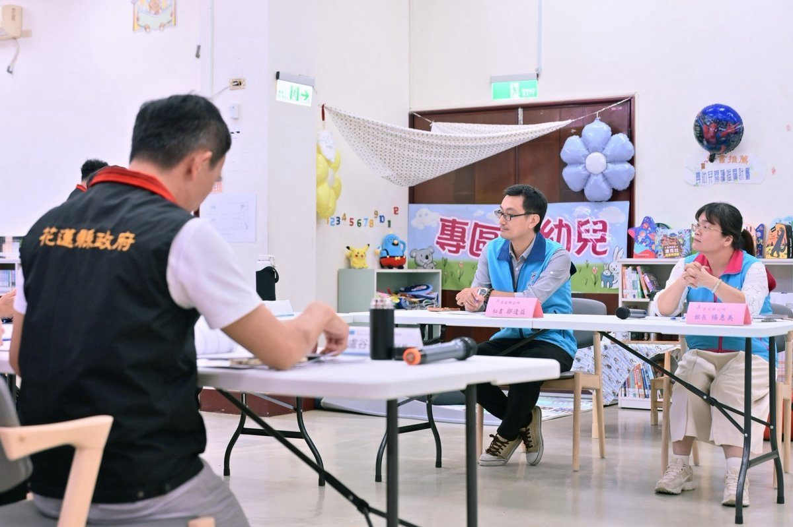

深化社區閱讀扎根在地！吉安鄉立圖書館接受全縣營運績效實地評鑑 游淑貞偕團隊展現多元亮點獲肯定

可樂電子報小編/編輯
花蓮縣文化局今（29）日上午於吉安鄉立圖書館辦理「115年度花蓮縣公共圖書館營運績效評鑑」實地訪視考核。由圖書館學術領域專家學者及資深實務工作者組成專業評鑑小組，針對「館舍空間及基礎建設」、「營運規劃及館藏資源」、「讀者服務與閱讀推廣」以及「加值創新表現」等四大核心指標進行全方位實地查核。評鑑委員在聽取團隊簡報並走訪各特色專區後，高度肯定吉安鄉圖在有限人力下展現的創新營運思維，對於空間活化、多元閱讀推廣與深耕社區的豐碩成果給予極佳評價。

教育背景出身的吉安鄉長游淑貞主政七年多來，深知閱讀是地方軟實力扎根的基石，任內積極編列專款挹注文化與閱讀環境建構。在公所團隊積極爭取外部資源下，購書經費自113年度的64萬元大幅提升至114年度的180萬元，由縣府補助與公所自籌協力投入，帶動圖書館總館藏自7萬9,564冊快速擴充至8萬5,107冊，年增達5,491冊。此外，吉安鄉更歷時3年艱辛編纂，順利完成《吉安鄉志》上、下冊續修鉅作，為地方珍貴歷史文化留下最完整的文史資產。

目前吉安鄉立圖書館每週開放達65小時，慶豐閱覽室每週開放40小時，館內提供逾8.9萬冊計次電子書資源，並設置原住民與客語多元文化專區，滿足不同族群讀者的閱覽需求。為打破傳統圖書館靜態閱覽框架，館方善用兩處館舍鄰近傳統市場的地利優勢，串聯南華國小、稻香國小、鄉立幼兒園與市場攤商，策劃「夜宿圖書館」、「菜市場美味閱讀奇遇」、「食農食樂」及「玩藝列車」等走入生活的跨域活動，加上推動多年的「百年百場每週六說故事」，讓閱讀自然融入鄉親日常，深獲評鑑委員讚賞。

吉安鄉長游淑貞表示，由衷感謝花蓮縣文化局長期推動藝術列車與多元閱讀計畫，並持續挹注設施設備經費，讓基層圖書館軟硬體得以不斷升級。在僅有7名編制的精簡團隊下，同仁全力以赴，不僅榮獲國立臺灣圖書館「創意閱讀開麥Library Talk」優良文案入選，更獲知名財經媒體《今周刊》以「圖書館輕旅行」為題專訪報導，成果得來不易。游淑貞強調，未來拉拉耙親子繪本館落成啟用後，服務網絡將更臻健全，鄉公所將持續串聯跨界資源，深耕親子與全齡閱讀，攜手縣府共創文化深耕的繽紛吉安。

▶ 延伸觀看
📺 相關報導影片：點此於 YouTube 觀看完整報導